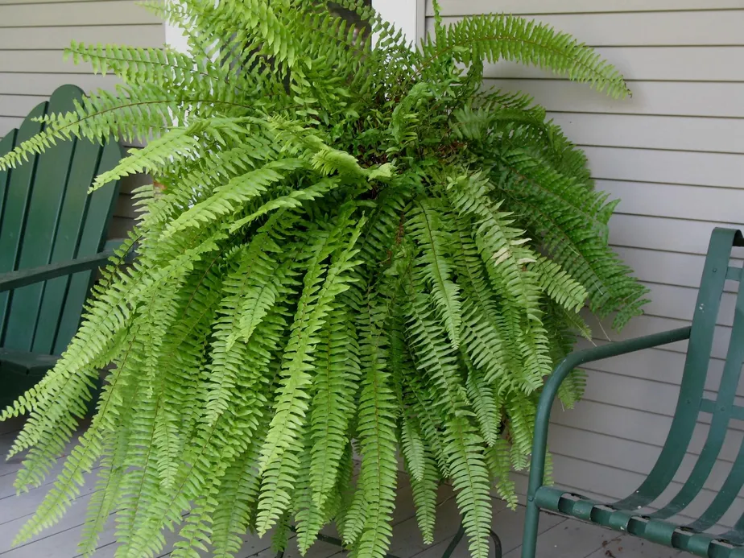
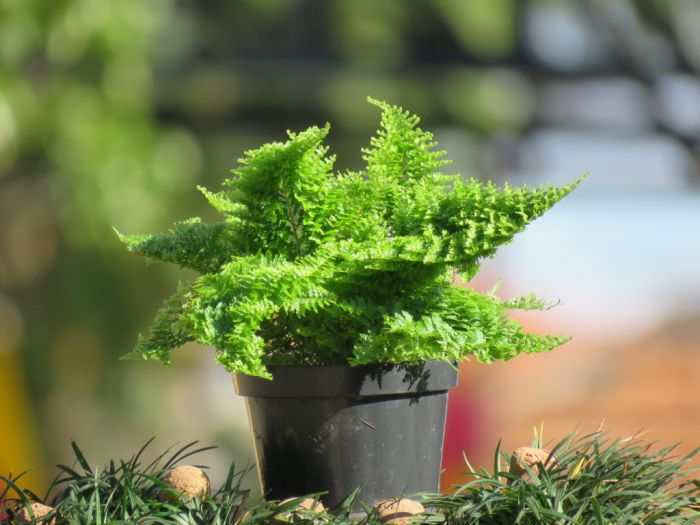
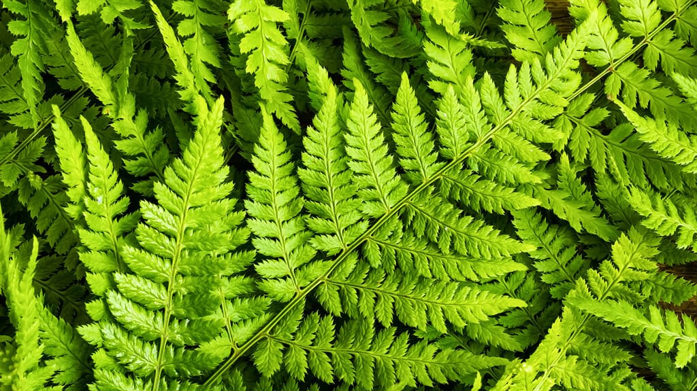

Samambaia
A samambaia é uma planta fascinante que pertence à família das Pteridáceas e é caracterizada por suas folhas delicadas e estéticas, conhecidas como frondes. Com uma história que remonta a centenas de milhões de anos, as samambaias são consideradas fósseis vivos, persistindo desde a era dos dinossauros. Essas plantas verdes e exuberantes trazem uma beleza tropical para ambientes internos e externos, tornando-as populares em jardins, canteiros e até mesmo em vasos dentro de casa..
Características e Variedades:
Folhas Frondosas: As folhas da samambaia são conhecidas como frondes e têm uma aparência delicada e complexa, composta por várias pinas que se ramificam.
Esporos Reprodutivos: As samambaias se reproduzem por meio de esporos, que são estruturas reprodutivas encontradas na parte inferior das frondes.
Diversidade de Espécies: Existem milhares de espécies de samambaias em todo o mundo, variando em tamanho, forma e coloração. Crescimento Rápido: A hortelã é conhecida por crescer vigorosamente e se espalhar facilmente por meio de rizomas subterrâneos, tornando-a uma planta perene e abundante.
Ciclo de Vida: O ciclo de vida das samambaias envolve a alternância de gerações, com uma fase haploide, representada pelos esporos, e uma fase diploide, representada pelas plantas adultas.
Habitat e Cultivo:
Ambientes Úmidos: As samambaias prosperam em ambientes úmidos e sombreados, sendo comuns em florestas tropicais, matas ciliares e ambientes litorâneos.
Solo e Drenagem: Elas preferem solos ricos em matéria orgânica e com boa drenagem, pois não toleram o acúmulo de água nas raízes.
Luz Adequada: Embora apreciem sombra parcial ou luz filtrada, algumas espécies de samambaia também podem tolerar luz solar indireta.
Cultivo em Vasos: Algumas variedades de samambaia podem ser cultivadas em vasos dentro de casa, desde que haja umidade e luz suficiente.
ManutençãoAs samambaias exigem cuidados regulares, como poda de folhas antigas e rega adequada para mantê-las saudáveis e vistosas.
Usos e Aplicações:
Decoração e Paisagismo: As samambaias são amplamente utilizadas em paisagismo, jardins de inverno e decoração de interiores devido à sua beleza exótica e elegante.
.jpeg)
Purificação do Ar: Essas plantas desempenham um papel na melhoria da qualidade do ar, pois ajudam a remover toxinas e poluentes do ambiente.
Jardins Verticais: As samambaias são excelentes escolhas para jardins verticais e paredes verdes, adicionando um toque natural e acolhedor ao ambiente.
Fonte de Inspiração: A beleza e a complexidade das frondes das samambaias têm inspirado artistas, designers e escritores ao longo da história.
.jpeg)
Conclusão: A samambaia é uma planta icônica que cativa os amantes da botânica por sua beleza, história e versatilidade. Com uma variedade de espécies para escolher e opções de cultivo tanto em ambientes internos quanto externos, a samambaia é uma adição encantadora e atemporal para qualquer espaço. Além de seu valor estético, essa planta traz benefícios à saúde e bem-estar, tornando-se uma escolha popular entre jardineiros e entusiastas de plantas em todo o mundo.